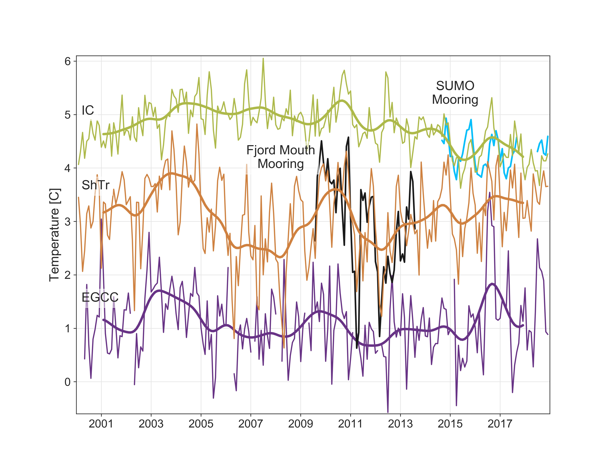
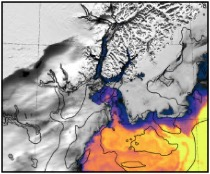

Research Projects
Past and present science
Using sea surface temperatures to study subsurface water temperatures near Helheim Glacier in southeast Greenland
The warm water melting glaciers around Greenland sits below 150 m depth, making them challenging to study using satellites. I worked with Fiamma Straneo and Jamie Holte from Scripps Institute of Oceanography to find a new way of using satellite-derived sea surface temperatures (SST) to determine surface and subsurface water temperatures near Helheim Glacier (one of the largest glaciers in Greenland found on the southeastern coast). To create this proxy, we used knowledge of ocean circulation patterns in the area and paired ocean temperatures measured from a mooring near Helheim Glacier with sea surface temperatures measured by the Moderate Resolution Imaging Spectroradiometer (MODIS) onboard the Aqua and Terra satellites to determine their relationship. In situ measurements only go back to 2010, but the MODIS SST records span back to 2000 allowing us to ascertain ocean information back to that time period if a proxy relationship is developed.
We found that once MODIS SSTs were adjusted for atmospheric temperatures (air-sea heat exchange), they could be used as a measure of surface ocean temperatures. In regions where surface waters are fully mixed down to deeper layers, the adjusted SSTs proved a proxy for subsurface waters as well. In a mixing region over Sermilik Trough near Helheim Glacier, the water column is homogneous (adjusted SSTs can be used as a proxy for subsurface water temperatures) and they reflect the water heading toward Helheim Glacier based on our in situ observations. Therefore, we were able to use adjusted MODIS SSTs to reconstruct warm water temperatures heading toward Helheim Glacier for the last 20 years.
The article published on this work:
Snow, T., Straneo, F., Holte, J., Grigsby, S., Abdalati, W., & Scambos, T. (2021). More than skin deep: Sea surface temperature as a means of inferring
Atlantic Water variability on the southeast Greenland continental shelf near Helheim Glacier. Journal of Geophysical Research: Oceans, 126, e2020JC016509.
https://doi.org/10.1029/2020JC016509).
Code to reproduce this work:
https://zenodo.org/badge/latestdoi/307779021
Alongshore winds force warm Atlantic Water toward Helheim Glacier in southeast Greenland
Greater transport of the warm subtropical Atlantic Waters into Greenland fjords has driven glacier mass loss, but the mechanisms transporting the subtropical waters to glacier fronts remain poorly characterized. Combining ocean temperature data with satellite imagery, we find that it is possible for strong winds to transport subtropical water from the open ocean towards Helheim Glacier, one of Greenland's largest glaciers. Often associated with the passing of cyclones, alongshore westerly wind events stimulate ocean circulation that brings subtropical waters from offshore onto the continental shelf along an underwater trough that leads to Helheim. Our measurements show that when these events produce ocean warming near-shore, they tend to transport more heat to Helheim Glacier's front where it can increase ice melting. A higher number of such wind events in a season has the potential to impact glacier calving, thinning, and retreat. These events may also occur along other bathymetric troughs leading toward Greenland glaciers and, therefore, may be important for predicting future Greenland Ice Sheet ice loss.
Code to reproduce this work:
https://github.com/tsnow03/AtlanticWaterIntrusions2023
Seeds of Change: Antarctic basal channel and persistent polynya co-evolution
Persistent polynyas are these really interesting localized areas of vigorous ice-ocean interaction that occurs at the surface of the ocean where we can view it from satellite. Polynya means an area of open ocean surrounded by ice. The polynyas we are interested in are persistent (appear in the same approximate location seasonally across multiple years) sensible heat polynyas (form as a result of ocean heating and melting a hole in the sea ice). They form at the edge of ice shelves in multiple locations around Antarctica where warm water interacts with the base of the ice shelf, melts to create relatively buoyant plumes that rise to the surface along the base of the ice shelf towards the terminus. Turbulence caused by the plumes mixes in warm subsurface water as it rises so the plumes bring warm water up to the surface, which can melt a hole in the sea ice if ice is present. The plumes preferentially rise along topographic highs in the bottom of the ice shelf, eventually carving the bottom of the ice shelf more and more over time until a basal channel form. You can imagine a basal channel as an upside river carved into the bottom of the ice shelf. The plumes flow out of the channels at the ice shelf edge and cause plumes to rise here, leading to the persistent location in the sensible heat polynyas. Since this ice-ocean interaction results in a polynya at the surface that we can sense from satellite, we can potentially learn about the ice-ocean interactions happening beneath the ice shelf from our satellite records. Few records exist in these harsh and remote regions, so if we can determine a relationship between what we see from satellite and what is occuring beneath or at the front of the ice shelf in today, we can use the ~40-year-long satellite record to infer change back before we have any field measurements.
In this project, we aim to automate the detection of these persistent polynyas around Antarctica, beginning with a case study of the polynya at the Eastern Thwaites Ice Shelf in West Antarctica. Ellianna Abrahams, a statistics graduate student at UC Berkeley, is working with me to build a physics-featurized neural net to automate the classification and detection of the polynyas. Her network will incorporate key information about the ice shelf edge and other features that can distinguish the persistent polynyas from other kinds of polynyas and open ocean areas. Michael Field, an undergraduate student who recently graduated from the Colorado School of Mines who will be continuing on to grad school with Mickey MacKie at the University of Florida, has built a neural network to automate the detection of the ice shelf front to feed into Ellie's neural net. Eojin Lee, an Applied Mathematics undergraduate from Columbia University, will continue Michael's work, adding in new training data and features for ice shelf detection. We will use our algorithms to measure polynya size, location, and temperature variability. These will be used alongside other environmental datasets to determine their co-evolution with ice shelf stability.
CryoCloud cloud computing and open science for Cryosphere researchcommunities
The CryoCloud is a JupyterHub built for NASA Cryosphere communities and their collaborators in partnership with the International Interactive Computing Collaboration (2i2c). Launched in October 2022, the CryoCloud cloud-computing projects aim to establish a curated interactive computing platform and develop Cryosphere community expertise in open-soured and cloud-based platforms. The intention is to transition cryosphere scientists into the cloud while discovering the needs and overall best practices for making this transition.
Read more about CryoCloud and the lessons we have learned so far in our Jupyter Book or our response to NASA's Request for Information.